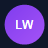

Learn languages while you watch
Turn all LinguaWatch features on or off.
Enable or disable lessons by platform.
Stored locally in your browser profile and used for translation/TTS requests.
Lessons appear at random intervals starting near this value (up to +5 min, max 15).
Loading stats…